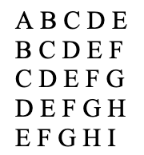

Задача 6(шт).
На складі зберігається певна кількість ящиків з яблуками (наприклад, 15). Коли під’їде машина для завантаження, попросити користувача ввести, скільки ящиків завантажити у першу машину, у другу і т. д., поки на складі не закінчаться ящики з яблуками. Передбачити той випадок, коли користувач вводить кількість, що перевищує поточну кількість ящиків на складі.
Задача 7.Інвестор вклав тис. грн на 20 років під 20% річних, а потім на 17 років під 27% річних. Визначити за допомогою циклів суму, яку він одержить.
Задача 0.Вивести на екран.

Задача 1.